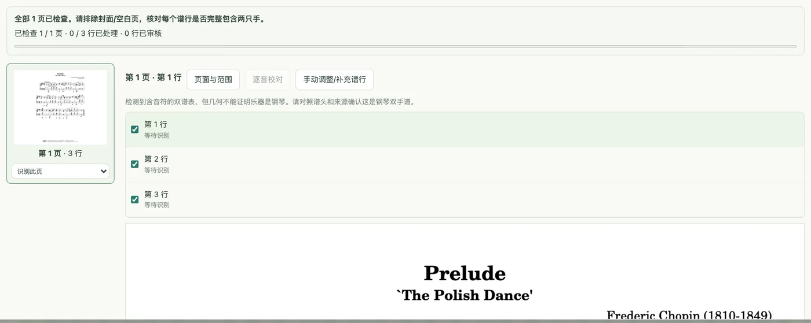
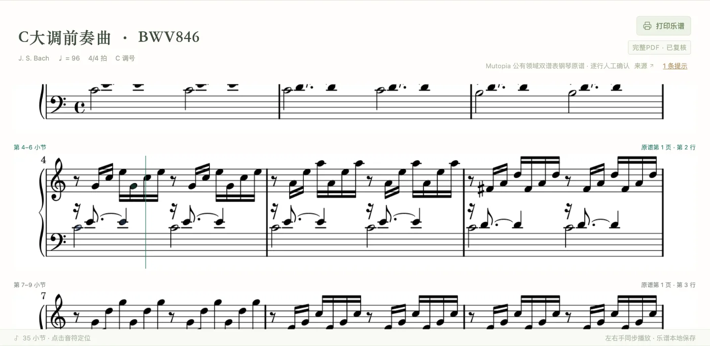
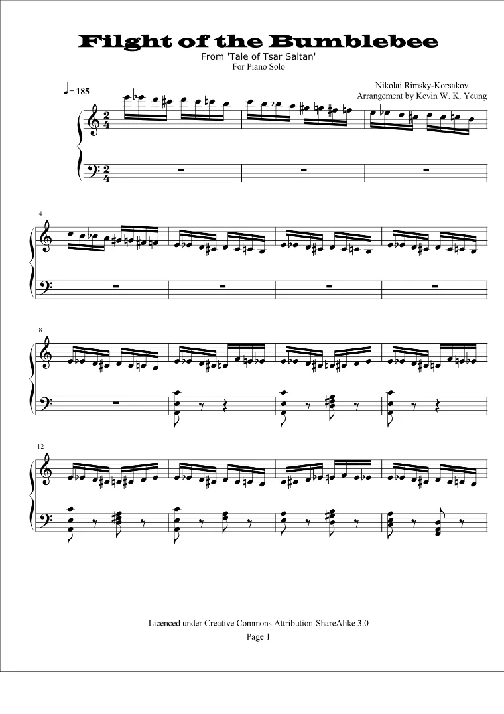

钢琴练谱工具
琴伴
拍一页钢琴谱，或者上传整份 PDF，琴伴把它识别成能播放、能修改的数字谱，再导出成 MIDI。手里已经有 MusicXML 的，不用识谱，直接转。
练琴的时候，谱面跟着声音一个音一个音往前走。
网页版打开就能用：播放、变速、分手练习、导入导出都在。照片和 PDF 识谱目前要在电脑上运行本机版。

照片、PDF → 数字谱 → MIDI
识谱分三步，每一步都能停下来检查。下面的截图都来自琴伴本身。
-

1先找出每一行
上传后，琴伴逐页找出谱行，右手、左手两行算作一行。封面和空白页可以排除，漏掉的行可以自己框出来。单个 PDF 最多 50 MB、200 页。
-

2对着原谱核对
每一行识别完，会再独立读一遍互相对照。识别结果可以直接在原谱图片上播放，哪一行有问题，听一遍、看一眼就知道。
-

3导出
确认之后就是一份普通的数字谱，能改音、变速、分手练。导出 MIDI 时钢琴分左右手两条轨，保留原谱速度；也可以导出 MusicXML 或排版成 A4 的 PDF。

一个实际例子：《野蜂飞舞》Kevin W. K. Yeung 钢琴独奏版，原谱 7 页、105 小节、1,313 个音。转写后用另一套程序把全部音高和原谱重新算了一遍，没有差异。下面的 MusicXML 示例就是这份转写结果。
识谱在本机版和账号版里提供。网页版能打开 MusicXML、MXL、MIDI、JSON，也能把录音转成谱，但不识别照片和 PDF。
MusicXML 直接转 MIDI
把 .musicxml 或 .xml 文件拖到下面的框里。转换在你的浏览器里完成，文件不会上传。钢琴谱的上下两行分成两条轨，速度和拍号一起写进 MIDI。
压缩的 .mxl 文件请用网页版的「导入乐谱」打开。这里的转换不计倚音，反复记号按书写顺序，不展开。
跟着谱面播放
播到哪个音，哪个音就亮；一行播完，自动翻到下一行。点谱上任意一个音，从那里开始。速度在 20 到 300 BPM 之间调，播放中改速度不会跳回开头。


试试网页版
不用安装。打开后在「我的曲库 → 云端曲库」里能搜到巴赫、贝多芬、肖邦、舒曼、布格缪勒的 40 首钢琴曲，上面截图里的《致爱丽丝》和《C 大调前奏曲》都在里面。
打开琴伴网页版